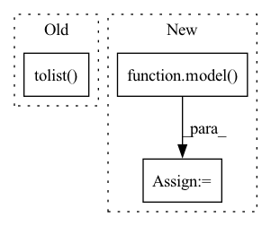

Pattern ID :20341
Before Change
predictions = model.predict(embeddings).tolist()
probabilities = model.predict_proba(embeddings).tolist()
probabilities_max = [round(max(i), 4) for i in probabilities]
results = []
if use_encoder == "True":After Change
embeddings = transformer.transform(corpus)
embeddings = torch.FloatTensor(embeddings)
logits = model( embeddings)
probs = F.softmax(logits, dim=1).tolist()
preds = torch.argmax(logits, dim=1).tolist()
predictions = model(embeddings).tolist()In pattern: SUPERPATTERN
Frequency: 3
Non-data size: 3
Instances Fragment ID: 66018575
Project Name: code-kern-ai/automl-docker
Commit Name: beb9d43d45a082e73514eec2131dd4bc6812772b
Time: 2022-08-15
Author: leopuettmann@gmail.com
File Name: app/api.py
M Class Name: AnonimousClass
N Class Name: AnonimousClass
M Method Name: predict(1)
N Method Name: predict(1)
M Parent Class:
N Parent Class:
M File Name: app/api.py
N File Name: app/api.py
M Start Line: 38
M End Line: 51
N Start Line: 43
N End Line: 57
Before Change
out = model(target_img_tensor)
// ps = torch.exp(out)
ps = out
prediction_percentages = (ps.cpu().numpy()[0]).tolist()
pred = prediction_percentages.index(max(prediction_percentages))
pred_labels.append(pred)
show_roc(true_labels, pred_labels, auc=auc, figure_size=figure_size)
After Change
with torch.no_grad():
model.eval()
out = model( imgs)
// ps = torch.exp(out)
ps = out
print(ps.shape)
print (ps) Fragment ID: 66018583
Project Name: radtorch/radtorch
Commit Name: 74b5ef917af3aebdf033166bf8b81cbc9ceb9b6e
Time: 2020-03-01
Author: elbanan@users.noreply.github.com
File Name: radtorch/visutils.py
M Class Name: AnonimousClass
N Class Name: AnonimousClass
M Method Name: show_nn_roc(5)
N Method Name: show_nn_roc(5)
M Parent Class:
N Parent Class:
M File Name: radtorch/visutils.py
N File Name: radtorch/visutils.py
M Start Line: 199
M End Line: 216
N Start Line: 201
N End Line: 215
Before Change
model.eval()
out = model(target_img_tensor)
ps = torch.exp(out)
prediction_percentages = (ps.cpu().numpy()[0]).tolist()
pred = prediction_percentages.index(max(prediction_percentages))
pred_labels.append(pred)
cm = metrics.confusion_matrix(true_labels, pred_labels)After Change
// print (imgs.shape)
with torch.no_grad():
model.eval()
out = model( imgs)
// ps = torch.exp(out)
ps = out
pr = [(i.tolist()).index(max(i.tolist())) for i in ps]
pred_labels = pred_labels+pr Fragment ID: 66018581
Project Name: radtorch/radtorch
Commit Name: 8122128d39112011e292071d336ed2e52abd8008
Time: 2020-03-01
Author: elbanan@users.noreply.github.com
File Name: radtorch/visutils.py
M Class Name: AnonimousClass
N Class Name: AnonimousClass
M Method Name: show_confusion_matrix(6)
N Method Name: show_confusion_matrix(6)
M Parent Class:
N Parent Class:
M File Name: radtorch/visutils.py
N File Name: radtorch/visutils.py
M Start Line: 312
M End Line: 327
N Start Line: 312
N End Line: 328